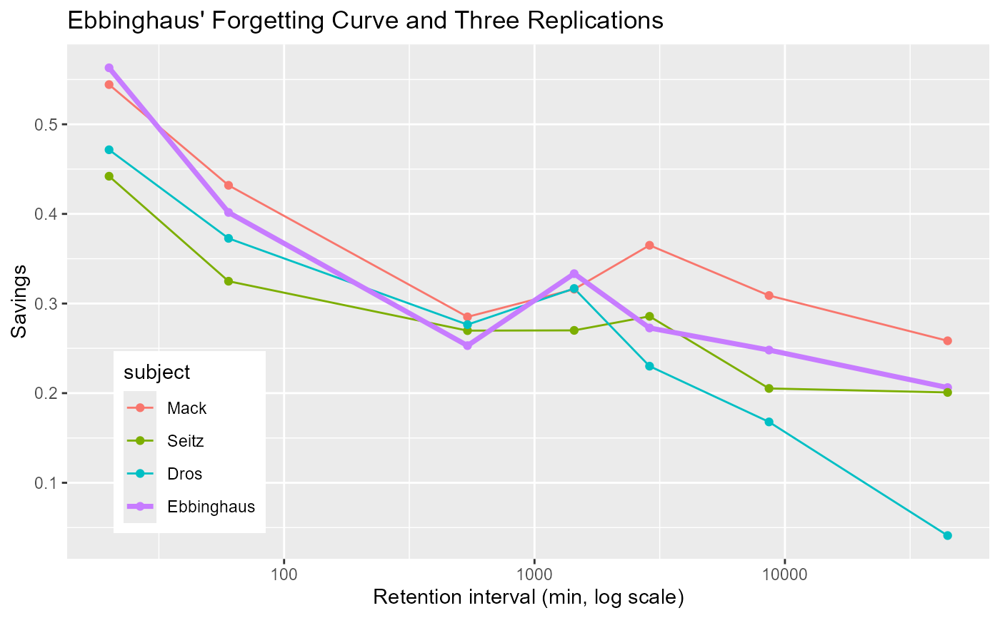

Learning and relearning scores from Hermann Ebbinghaus' (1885) classic forgetting-curve experiment, together with two later replications: Mack and Seitz (Heller, Mack & Seitz, 1991) and Dros (Murre & Dros, 2015). All four used Ebbinghaus' savings method: a list of nonsense syllables is learned to criterion, then relearned after a retention interval ranging from 20 minutes to 31 days; less effort on relearning ("savings") indicates less forgetting.
Usage
data("Ebbinghaus")Format
A data frame with 28 observations on the following 5 variables, one row per subject x retention interval (4 subjects x 7 intervals).
intervalordered factor, retention interval between learning and relearning, with levels
"20 min","1 hour","9 hours","1 day","2 days","6 days","31 days"timenumeric, the same retention interval expressed in minutes (20, 60, 540, 1440, 2880, 8640, 44640), for plotting or modeling on a numeric (typically log) scale
subjectfactor, one of
"Ebbinghaus","Mack","Seitz","Dros"learningnumeric, mean number of repetitions needed to first learn a list to criterion
relearningnumeric, mean number of repetitions needed to relearn the same list to criterion after the retention interval
Source
Learning/relearning repetition counts for Ebbinghaus, Mack and Seitz were provided by Jaap Murre (April 2025) from his working spreadsheet for the replication paper, for use in this package, with permission. Dros' values are transcribed from Table 1 of Murre & Dros (2015), which is open access under a Creative Commons Attribution (CC BY) license.
Details
Ebbinghaus used himself as his only subject, testing himself with lists of nonsense syllables over roughly seven months in 1879-1880. His results have since been replicated several times; this dataset combines his own numbers with two of those replications:
Ebbinghausthe original 1885 data.
Mack,Seitztwo subjects from a German replication by Heller, Mack & Seitz (1991), not otherwise available in English.
Drosa Dutch replication (J. Dros, the second author) by Murre & Dros (2015), run over 75 days in 2011-2012.
The classic "savings" score for a subject/interval is
(learning - relearning) / learning. Computing it from learning and relearning
here reproduces the published savings percentages for Mack and Seitz exactly, because
Heller et al.'s savings were themselves based on repetition counts. It does not exactly
reproduce the published values for Ebbinghaus or Dros, because both of those studies
report savings computed from time spent learning/relearning (in seconds), which is
correlated with, but not identical to, the repetition counts recorded here.
Ebbinghaus, Mack and Seitz's repetition counts come from a working spreadsheet
compiled by Jaap Murre; they do not appear in the published replication paper itself,
whose own Table 1 (repetitions) only covers Dros, and whose Table 3 (the paper's main
comparison table) gives savings percentages only, for all four. This dataset is a
complement to that paper: same four subjects and retention intervals, but with the
underlying learning/relearning repetition counts kept separate rather than pre-reduced
to a single savings figure.
Dros' own learning/relearning values are taken directly from Table 1 of Murre & Dros
(2015) (means over 9-10 lists per interval).
References
Ebbinghaus, H. (1885). Über das Gedächtnis. Leipzig: Dunker.
Heller, O., Mack, W., & Seitz, J. (1991). Replikation der Ebbinghaus'schen Vergessenskurve mit der Ersparnis-Methode: "Das Behalten und Vergessen als Funktion der Zeit". Zeitschrift für Psychologie, 199, 3-18.
Murre, J. M. J., & Dros, J. (2015). Replication and Analysis of Ebbinghaus' Forgetting Curve. PLoS ONE, 10(7), e0120644. doi:10.1371/journal.pone.0120644
Examples
data(Ebbinghaus)
str(Ebbinghaus)
#> 'data.frame': 28 obs. of 5 variables:
#> $ interval : Ord.factor w/ 7 levels "20 min"<"1 hour"<..: 1 2 3 4 5 6 7 1 2 3 ...
#> $ time : num 20 60 540 1440 2880 ...
#> $ subject : Factor w/ 4 levels "Ebbinghaus","Mack",..: 1 1 1 1 1 1 1 2 2 2 ...
#> $ learning : num 23.8 24.4 24.9 25.2 26.4 26.2 25.7 23.7 25.7 24.2 ...
#> $ relearning: num 10.4 14.6 18.6 16.8 19.2 19.7 20.4 10.8 14.6 17.3 ...
# classic savings measure
Ebbinghaus$savings <- with(Ebbinghaus, (learning - relearning) / learning)
if (require("ggplot2")) {
# Ebbinghaus' own curve drawn 2.5x as thick as the replications' (default
# linewidth 0.5 -> 1.25), to set his original data apart from the others
ggplot(Ebbinghaus, aes(x = time, y = savings, colour = subject)) +
geom_line(data = subset(Ebbinghaus, subject != "Ebbinghaus"), linewidth = 0.5) +
geom_line(data = subset(Ebbinghaus, subject == "Ebbinghaus"), linewidth = 1.25) +
geom_point() +
scale_x_log10() +
labs(x = "Retention interval (min, log scale)", y = "Savings",
title = "Ebbinghaus' Forgetting Curve and Three Replications") +
theme(legend.position = "inside",
legend.position.inside = c(0.05, 0.05),
legend.justification = c(0, 0))
}
